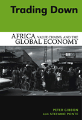

Examining the changing role of Africa in the global economy
Examining the changing role of Africa in the global economy


 Examining the changing role of Africa in the global economy
Examining the changing role of Africa in the global economy

|  |
Trading DownAfrica, Value Chains, and the Global EconomyPeter Gibbon and Stefano Pontepaper EAN: 978-1-59213-368-0 (ISBN: 1-59213-368-1) |
"This is an exceptionally important piece of work. It simultaneously achieves a number of important objectives. The first is to situate Africa-typically seen in terms of marginalization-centrally on the landscape of specific post-adjustment forms of globalization and its impact. Second, it performs an important empirical service by providing an account of the new high value sectors (which extends beyond Africa of course). Third, it links convention theory with global value chains (as part of a project that rethinks the political economy of contemporary forms of capitalism). And all of this through a careful analysis of forms of governance and regulation and the ways in which quality and value are now central to the 'new' economy."
—Michael Watts, Chancellor's Professor of Geography and Development Studies, University of California, Berkeley
Africa's role in the global economy is evolving as a result of new corporate strategies, changing trade regulations, and innovative ways of overseeing the globalized production and distribution of goods both within Africa and internationally. African participants in the global economy, now faced with demands for higher levels of performance and quality, have generated occasional successes but also many failures. Peter Gibbon and Stefano Ponte describe the central processes that are integrating some African firms into the global economy while at the same time marginalizing others. They show the effects of these processes on African countries, and the farms and firms within them. The authors use an innovative combination of global value chain analysis—which links production, trade, and consumption—and convention theory, an approach to understanding the conduct of business. In doing so, Gibbon and Ponte present a timely overview of the economic challenges that lay ahead in Africa, and point to ways to best address them.
Excerpt available at www.temple.edu/tempress
"Trading Down makes new, original, and creative contributions to understanding obstacles to African economic development. With detailed treatment of sub-Saharan Africa's role in global value chains—placing African performance squarely within the context of global capitalism—the authors bring much insight to a problem (weak African economic performance) that still cries out for new ideas. The combination of theoretical sophistication and detailed case knowledge is very impressive."
—William Milberg, Associate Professor of Economics, New School University
"Gibbon and Ponte have produced an impressive and important work of considerably concentrated and intense intelligent reflection."
—The Journal of Agrarian Culture
"This book offers an alternative and truly insightful view, focusing on the dilemmas faced by African producers and policymakers.... The conclusions drawn by the authors are sobering."
—The European Journal of Developmental Research
"The book is immensely rich in empirical material and avoids sweeping judgments in favor of more complex and cautious analysis...The book's early chapters provide an excellent overview of African IPE...it is a book of great value to anyone interested in the nature of contemporary global capitalism and especially interested in the ways in which it affects those societies most historically disadvantaged by it."
—Political Studies Review
"The book is an important contribution to our understanding of Africa's relationship to the world economy and to our awareness of how economic liberalization programs and the WTO systems are influencing the region's industries.... [it] will serve as a welcome addition to the somewhat thin literature on sub-Saharan Africa's relationship to global value chains."
—Economic Geography
"Overall, the author�s presentation of the literature of convention theory and its usefulness in conjunction with global value chain analysis for understanding issues of governance, marginalization, and exclusion within African trade is lucid and convincing....this [is an] important and engaging survey of African commodity trade issues."
—Environment and Planning A.
"[A] very interesting analysis of African countries� comparative advantages in today�s trading environment...Gibbon and Ponte offer a valuable contribution to the discussion of how to improve African countries position in global value chains."
—The African Development Perspectives Yearbook
"Trading Down is a revolutionary text about agriculture in Africa...The authors recount in great detail how the world�s economy and trade regimes have been altered through the operation of Global Value Chains and how Northern demands have evolved."
—African Studies Review
"[T]his is a very appealing and useful book. It opens up a new agenda within value chain analysis, one that calls for further refinement and extension. I was enthused and inspired by the book....This is a landmark text in value chain analysis; the first major text to link value chain analysis and convention theory to international trade policy setting, on which more could be done in the future."
—Modern African Studies
"The book provides an incisive analysis of the changing structure of international markets for African commodities. Theoretically and empirically rigorous...It would be a mistake to classify this book as solely of interest to academics and African trade specialists. It should be required reading for anyone concerned with African economic development, especially African exporters and government policy makers, because it so clearly sets out what they are up against."
—Development and Change
"[A] very interesting analysis of African countries� comparative advantages in today�s trading environment....Gibbon and Ponte offer a valuable contribution to the discussion of how to improve African countries position in global value chains."
—African Development Perspectives Yearbook
Also available in e-book
Preface
1. The Age of Global Capitalism
Economic Globalization ·
Corporate Financialization and Shareholder Value ·
Saturated Markets and Oligopolistic ·
Rent Seeking ·
Buyer Power and Strategic Outsourcing ·
Supplier Adjustment in the World of Category ·
Management ·
Conclusion
2. The New International Trade Regime
Trends in Africa's International Trade ·
The International Trade Regime Prior to WTO ·
The New International Trade Regime ·
Conclusion
3. Global Value Chain (GVC) Analysis
Main Features ·
Governance ·
Upgrading ·
Conclusion
4. The Rise of Buyer-Driven Global Value Chains in Africa
The Rise of Buyer-Driven Chains ·
Main Actors in, and Configurations of, Selected Global Value Chains ·
Formal Regulatory Frameworks and Historical Changes in GVC Governance ·
Strategies of Lead Firms ·
Chain Driving? ·
Conclusion
5. Entry Barriers, Marginalization, and Upgrading
Entry Barriers for First- and Second-Tier Suppliers ·
Marginalization and Exclusion ·
Upgrading ·
Conclusion
6. Quality Standards, Conventions, and the Governance of Global Value Chains
Quality in Economic Analysis ·
Convention Theory ·
Quality, Entry Barriers, and Governance in GVCs: Empirical Evidence from Africa ·
Conventions and the Governance of Global Value Chains ·
Conclusion
7. Trading Down?
Africa, Value Chains, and the Global Economy ·
Trading Down? ·
GVC Analysis and Future Research Directions
Notes
References
Index
Peter Gibbon is a Senior Researcher at the Danish Institute for International Studies. Amongst his authored works is A Blighted Harvest: The World Bank and African Agriculture in the 1980s. He has also edited numerous books.
Stefano Ponte is a Senior Researcher at the Danish Institute for International Studies. He is the author of Farmers and Markets in Tanzania: How Market Reforms Affect Rural Livelihoods in Africa and co-author (with Benoit Daviron) of The Coffee Paradox: Global Markets, Commodity Trade and the Elusive Promise of Development.
Political Science and Public Policy
Sociology
© 2015 Temple University. All Rights Reserved. This page: http://www.temple.edu/tempress/titles/1792_reg.html.